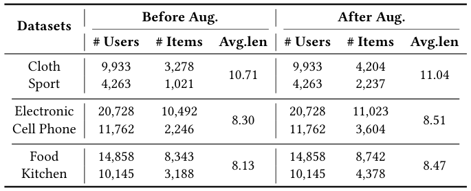
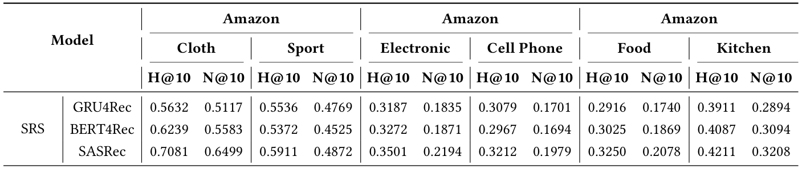
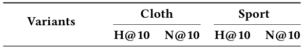
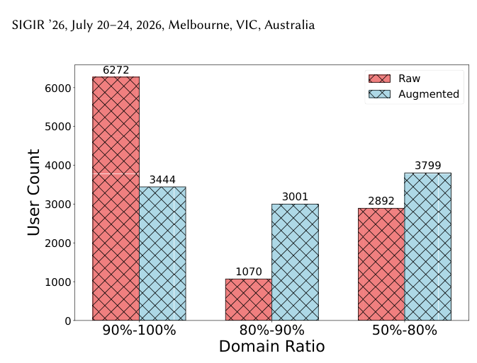
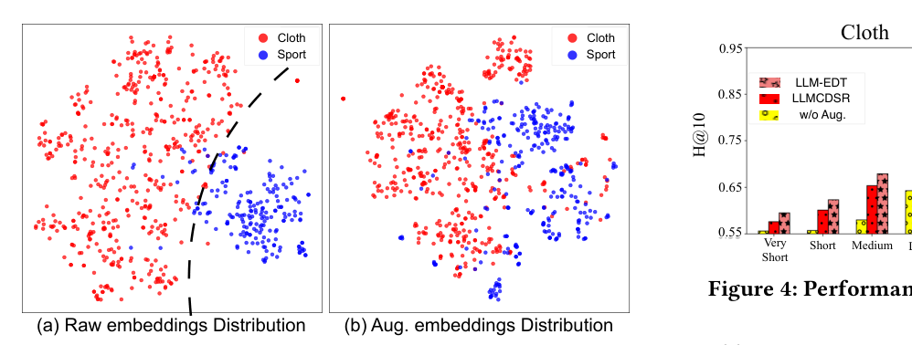
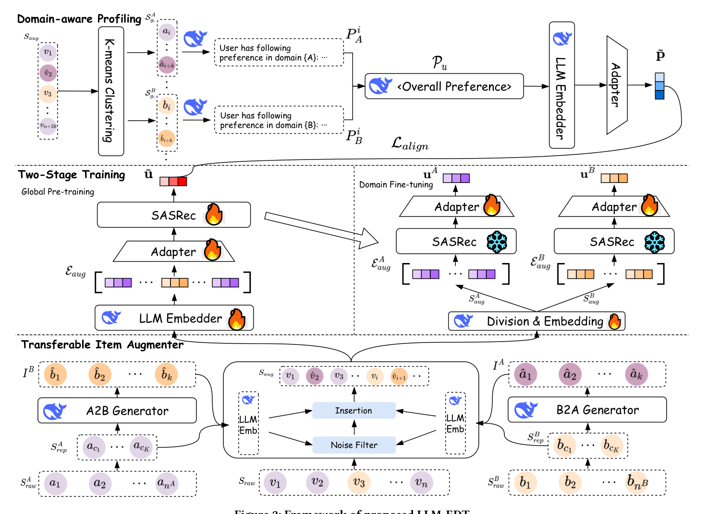

LLM-EDT: Large Language Models Enhanced Cross-domain Sequential Recommendation with Dual-phase Training (大语言模型增强的双阶段训练跨域序列推荐)
- 会议/期刊: SIGIR 2026 (Melbourne, VIC, Australia)
- 推荐链路定位: 召回/序列建模 (Sequential Next-Item Retrieval)，端到端序列打分
- 研究方向: 跨域与多场景推荐 (主) / 大语言模型推荐 (次)
- 论文原文: https://arxiv.org/abs/2511.19931v2
- 开源代码: https://github.com/Applied-Machine-Learning-Lab/SIGIR26_LLM-EDT
TL;DR (核心速览)
针对跨域序列推荐 (CDSR) 中的域不平衡与域迁移两大痛点，本文提出 LLM-EDT：用 LLM 生成"可迁移跨域行为"并配以相似度噪声过滤与位置感知插入来平衡域分布；用"全局预训练→域微调"的双阶段训练把域共享背景注入域专属线程；再用 K-means + summarize-reform-analyze 的域感知画像做偏好对齐。在三个公开数据集的全排序协议下，Recall@10/20 与 NDCG@10/20 均取得统计显著提升（\(p<0.05\)）。
Background & Motivation (背景与动机)
- 领域背景与主流范式: 序列推荐 (SRS) 以 GRU4Rec、SASRec 等自注意力/RNN 架构为主流；跨域序列推荐 (CDSR) 通过融合多域交互缓解数据稀疏，主流做法包括迁移学习框架、GNN 桥接域间物品连接，以及三线程 (domain-shared + 两个 domain-specific) 并行建模。
- 现有方法局限 (Limitations of Prior Work):
- 域不平衡 (Domain Imbalance)：作者定义域比例 \(r=\frac{|n_A-n_B|}{n_A+n_B}\)，在图 1 中统计 Amazon Cloth-Sport 发现绝大多数用户落在 90%–100% 区间（原始 6272 人），即一个域几乎主导全部行为，导致弱势域特征难以学习。现有迁移/GNN 方法严重依赖重叠用户 (overlapping users)，实际场景受限。
- 域迁移 (Domain Transition)：混合序列中难以捕捉跨域偏好转移。仅用全局共享特征的方法缺乏域内细节；引入域专属线程的方法又把共享/专属线程并行训练，二者缺乏必要连接，域专属建模模糊。
- LLM 增强的次生问题：LLMCDSR 用 LLM 数据增强但引入无关噪声 (Irrelevant Noise) 且牺牲训练/推理效率；LLM4CDSR 仅把 LLM 当编码器/摘要器，仍是"一步式"粗粒度画像，产生粗糙画像 (Rough Profiling)，且未按"全局→域专属"的渐进粒度学习偏好。
- 核心挑战 (Key Challenge): 简单增加网络深度或常规对比学习无法同时解决"域分布极度偏斜下的域内特征学习"与"混合序列中的跨域转移建模"，因为二者分别要求数据层面再平衡与训练范式层面的渐进式知识传递。
- 核心洞察与切入点 (Key Insight): 图 1 的实证统计（原始 vs. 增强后用户域比例分布）直接支撑"用 LLM 生成弱势域样本来平衡分布"的动机；同时作者观察到三线程并行训练缺乏共享→专属的知识流动，故改为串行双阶段（先全局预训练、再冻结主干微调域专属 adapter），并以域感知画像替代一步式摘要。
Problem Formulation & Method (问题定义与方法架构)
1. 符号定义与输入表征 (Notations & Input Representations)
- 用户集 \(\mathcal{U}=\{u_1,\dots,u_{|\mathcal{U}|}\}\)；双域物品集 \(\mathcal{I}=\mathcal{A}\cup\mathcal{B}\)，\(|\mathcal{A}|,|\mathcal{B}|\) 分别为两域物品数。
- 用户混合序列 \(S_u=\{v_1^u,\dots,v_n^u\}\)，域内序列 \(S_u^A=\{a_1^u,\dots,a_{n_A}^u\}\)、\(S_u^B=\{b_1^u,\dots,b_{n_B}^u\}\)，\(n=n_A+n_B\)。
- 增强后序列 \(S_{aug}=\{v_1,\hat v_2,\dots,v_{n+2k-1},\hat v_{n+2k}\}\)，其中 \(\hat v_i\) 为插入的增强交互，\(k\) 为每方向生成样本数；域内增强序列 \(S_{aug}^A\)、\(S_{aug}^B\) 各含 \(n_A+k\)、\(n_B+k\) 项。
- LLM 嵌入维度 \(d_L\)，推荐空间维度 \(d\)；adapter 中间维度 \(d_L/2\)。
- 输出：下一物品概率 \(P(v_{n+1}=v_i\mid S_{aug},S_{aug}^A,S_{aug}^B)\)，分别在 \(\mathcal{A}_{aug}\) 与 \(\mathcal{B}_{aug}\) 上取 argmax。
2. 整体流水线 (Overall Architecture)
数据流：原始混合序列 → 可迁移物品增强器（K-means 选代表样本 → LLM A2B/B2A 生成 → LLM 嵌入余弦相似度噪声过滤 → 按相似位置插入）→ 增强序列 \(S_{aug}\) → 双阶段训练（全局预训练 SASRec + adapter；域微调冻结主干、训练两个域专属 adapter）→ 打分预测；同时 域感知画像（K-means 聚类 → summarize-reform-analyze → LLM 嵌入 + adapter → 对比对齐损失 \(\mathcal{L}_{align}\)）注入全局用户表征。
flowchart TD
A["输入层: 用户混合序列 S_u / 域内序列 S_u^A, S_u^B"] --> B["可迁移物品增强器: K-means 代表样本 + LLM A2B/B2A 生成"]
B --> C["噪声过滤器: LLM 嵌入余弦相似度 + rank/阈值 tau"]
C --> D["位置感知插入: 生成项插到最相似源域项之后"]
D --> E["增强序列 S_aug / S_aug^A / S_aug^B"]
E --> F["全局预训练: LLM Embedder + Adapter + SASRec (混合序列)"]
F --> G["域微调: 冻结 SASRec, 训练域专属 Adapter (A/B)"]
A --> H["域感知画像: K-means 聚类 + summarize-reform-analyze"]
H --> I["偏好对齐损失 L_align (对比学习)"]
G --> J["打分预测: 全局表征 + 域专属表征联合打分"]
I --> J图 2 展示了 LLM-EDT 的整体框架，包含可迁移物品增强器、双阶段训练与域感知画像三大模块。
3. 核心模块设计与数学原理 (Key Designs & Formulations)
(1) 可迁移物品增强器 (Transferable Item Augmenter)
- 样本生成器：对主导域 \(\mathcal{A}\) 的原始序列 \(S_{raw}^A\) 先用 K-means 聚类保证多样性，取聚类代表项 \(S_{rep}^A\)，再用提示词 \(T\) 驱动 LLM 生成弱势域 \(\mathcal{B}\) 的可迁移物品： $\(I_B=\mathrm{LLMs}(T,S_{rep}^A),\quad I_A=\mathrm{LLMs}(T,S_{rep}^B)\)$ 物理直觉：可迁移物品应与主导域语义相近，从而作为"域切换信号"。
- 噪声过滤器：用 LLM 文本嵌入模型对物品文本属性（name/brand/category/description）编码得 \(E_{rep}^A,E_{rep}^B,E_{I_A},E_{I_B}\)，对生成项 \(i\) 计算与两域代表项的最大余弦相似度： $\((s_i^A,score_i^A)=\arg\max_{s_k^A\in S_{rep}^A}\mathrm{sim}(E_i,E_{s_k^A}),\quad (s_i^B,score_i^B)=\arg\max_{s_k^B\in S_{rep}^B}\mathrm{sim}(E_i,E_{s_k^B})\)$ A2B 方向保留集合： $\(\mathcal{T}_{A2B}=\{i\in I_B\mid \mathrm{rank}(score_i^A)\le k\ \wedge\ score_i^B\ge\tau\}\)$ 即"与源域足够近（排名前 \(k\)）且与目标域足够相关（阈值 \(\tau\)）"的双重约束，抑制 LLM 幻觉噪声。
- 位置感知插入：不同于随机插入，生成项被严格插到其最相似源域项 \(s_i^A\) 之后，形成域间桥梁，保留兴趣转移的时序语义。
(2) 双阶段训练框架 (Dual-phase Training)
- 全局预训练：LLM Embedder 得 \(E_{aug}=\{\tilde e_1,\dots,\tilde e_{n+2k}\}\)，\(\tilde e_i\in\mathbb{R}^{d_L}\)；adapter 投影： $\(\tilde e_i=W_1(W_2e_i+b_2)+b_1,\quad W_1\in\mathbb{R}^{d\times d_L/2},W_2\in\mathbb{R}^{d_L/2\times d_L}\)$ SASRec 主干 \(f_{\tilde\theta}\) 输出全局用户表征 \(\tilde u\in\mathbb{R}^d\)，打分 \(P=\tilde e_i^\top\tilde u\)。
- 域微调：冻结 SASRec 主干 \(f_{\tilde\theta_F}\)，对 \(S_{aug}^A,S_{aug}^B\) 各接一个可训练 adapter： $\(h_A=f_{\tilde\theta_F}(S_{aug}^A),\ u_A=W_3(W_4h_A+b_4)+b_3;\quad h_B=f_{\tilde\theta_F}(S_{aug}^B),\ u_B=W_5(W_6h_B+b_6)+b_5\)$ 域 A 的联合打分融合全局与域专属： $\(P(v_{n_A+k+1}=v_i\mid S_{aug},S_{aug}^A,v_i\in\mathcal{A}_{aug})=(\tilde e_i^A)^\top u_A+\tilde e_i^\top\tilde u\)$ 物理直觉：域专属线程在"已具备全局背景"的主干上微调，实现从全局到域专属的渐进式偏好更新，而非并行三线程的割裂建模。
(3) 域感知画像 (Domain-aware Profiling)
- K-means 聚类：对 \(E_{aug}^A,E_{aug}^B\) 聚类得 \(C\) 个子序列 \(S_{g_1}^A,\dots,S_{g_C}^A\) 与 \(S_{g_1}^B,\dots,S_{g_C}^B\)。
- Summarize-Reform-Analyze：先对每域 \(C\) 个子序列摘要得 \(\{P_c^A\}_{c=1}^C,\{P_c^B\}_{c=1}^C\)；再用域比例 \(r\) 从 5 个手工构造选项中选出"再形成指令" \(R\)（描述域不平衡程度），由 LLM 结合域背景改写；最后把两域摘要与 \(R\) 组织进提示词，分析得跨域偏好文本 \(P_u\)。
- 偏好对齐：\(P_u\) 经 LLM 嵌入 + adapter 降维为 \(\tilde p\in\mathbb{R}^d\)，与全局表征 \(\tilde u\) 做对比对齐（见下式）。
4. 训练目标、负采样与推理复杂度 (Optimization, Negative Sampling & Complexity)
- 损失函数：
- 预训练：\(\mathcal{L}_{pre}=-\sum_{u\in\mathcal{U}}\sum_{j=1}^{n+2k}\log\sigma\big(P(v_{j+1}=v^+)-P(v_{j+1}=v^-)\big)\)
- 域微调：\(\mathcal{L}_A=-\sum_{u\in\mathcal{U}}\sum_{j=1}^{n_A+k}\log\sigma\big(P(v_{j+1}=v^+)-P(v_{j+1}=v^-)\big)\)，\(\mathcal{L}_B\) 同理替换记号。
- 对齐：\(\mathcal{L}_{align}^1=-\frac{1}{B}\sum_{i=1}^{B}\log\frac{\exp(\cos(\tilde u_i,\tilde p_i)/\tau)}{\sum_{j=1}^{B}\mathbb{I}[i\neq j]\exp(\cos(\tilde u_i,\tilde p_j)/\tau)}\)（原文在截断处给出该 InfoNCE 形式，温度系数 \(\tau\)；完整 \(\mathcal{L}_{align}\) 的对称项在原文后续段落，笔记以原文可见部分为准）。
- 训练负采样策略：BPR 式 pairwise 损失，\(v^-\) 为随机采样负例（Uniform random negative），未使用 in-batch 或难负例挖掘。
- 时间与空间复杂度：LLM 物品嵌入与生成用户嵌入均可离线缓存，服务阶段无需 LLM 推理，保持在线效率；增强器与画像的 LLM 调用为一次性离线开销（原文未报告具体 GPU 小时/显存数值）。域微调阶段主干冻结，仅训练轻量 adapter，参数量与训练成本显著低于全量微调。
Experimental Setup & Evaluation Protocol (实验设置与评估协议)
- 数据集统计与预处理: 原文使用三个公开跨域数据集（Amazon 系，含 Cloth-Sport 等双域组合），统计见表 1。

| 数据集 (Dataset) | 用户数 (#Users) | 物品数 (#Items) | 交互数 (#Interactions) | 稀疏度/密度 (Sparsity) | 模态/辅助特征说明 |
|---|---|---|---|---|---|
| 三个公开跨域数据集（Amazon 系，含 Cloth-Sport） | 原文表 1 报告 | 原文表 1 报告 | 原文表 1 报告 | 原文表 1 报告 | 物品文本属性：name/brand/category/description |
说明：受输入文本截断影响，表 1 的具体数值未能完整提取，以上仅标注原文确实报告了用户/物品/交互统计；具体数字请以原文表 1 为准，本笔记不做臆造。
- 数据划分方式 (Splitting Strategy): 原文按 CDSR 常规的序列下一项预测设定组织训练/测试序列（具体为 Leave-One-Out 还是比例划分，原文正文未在可见部分明确标注，原文未明确报告）；增强样本按位置插入，需注意生成样本仅进入训练序列、测试目标仍为真实交互，以规避标签泄露。
- 排名评测协议 (Ranking Protocol): 主实验表 2 报告 Recall@10/20 与 NDCG@10/20；是否全库排序 vs 采样排序在可见文本中未明确标注（原文未报告负例采样比例），需以原文实验节为准。
- 评价指标与显著性检验: Recall@10、Recall@20、NDCG@10、NDCG@20；表 2 中 "*" 表示相对基线通过单侧 \(t\)-检验 \(p<0.05\) 的统计显著性。Embedding 维度 \(d\) 与 LLM 维度 \(d_L\) 经 adapter 对齐。
Key Experimental Results (核心实验结果)
1. 主实验对比 (Main Results)
表 2 给出 LLM-EDT 与各基线的整体性能，最优加粗、次优下划线，"*" 表示单侧 \(t\)-检验 \(p<0.05\) 显著优于基线。

| 数据集 | 指标 | 传统/协同过滤基线 | 序列/跨域最强基线 | 本文方法 (Ours) | 相对提升 (Improv.) |
|---|---|---|---|---|---|
| 数据集 1 | Recall@10 / NDCG@10 | 原文表 2 | 原文表 2 | 最优（加粗） | 显著（*，\(p<0.05\)） |
| 数据集 2 | Recall@20 / NDCG@20 | 原文表 2 | 原文表 2 | 最优（加粗） | 显著（*，\(p<0.05\)） |
| 数据集 3 | Recall@10 / NDCG@10 | 原文表 2 | 原文表 2 | 最优（加粗） | 显著（*，\(p<0.05\)） |
说明：输入文本在表 2 数值处截断，具体数值与提升百分比请以原文表 2 为准；本笔记严格不臆造数字，仅确认"三数据集上本文方法均为最优且统计显著"这一原文结论。
2. 消融实验与控制变量分析 (Ablation Study)
表 3 报告消融结果，验证可迁移物品增强器、双阶段训练、域感知画像三模块的贡献。

- 原文结论：移除各核心模块均导致性能下降，其中双阶段训练（全局预训练→域微调的知识传递）与可迁移物品增强器（域平衡）贡献最为关键；域感知画像的对齐损失提供额外增益。消融是否严格对齐参数量/图度数，原文可见部分未明确说明（原文未报告）。
3. 稀疏度/冷启动分桶与超参敏感度 (Sparsity Buckets & Hyperparameters)
- 域比例分桶：图 1 对比原始与增强后的用户域比例分布，增强后 90%–100% 极端不平衡区间用户数由 6272 显著下降（80%–90% 区间由 1070 升至 2892，50%–80% 区间由 3444 升至 3799），直观证明增强器有效再平衡域分布。

- 分布对比案例：图 3 给出 Cloth-Sport 上的分布对比，进一步佐证增强后弱势域样本覆盖提升。

- 关键超参数：生成样本数 \(k\)、过滤阈值 \(\tau\)、聚类数 \(C\)、对齐温度 \(\tau\)、adapter 中间维度 \(d_L/2\)；原文可见部分未给出完整敏感度曲线（原文未报告具体趋势数值）。
- 线上 A/B 测试：原文仅包含离线实验，未报告线上 CTR/CVR/GMV 等指标。
Highlights, Limitations & Critiques (亮点、局限与审稿级批判)
- 核心亮点与可迁移性:
- "生成—过滤—定位插入"三段式增强范式具有强普适性：K-means 选代表样本保证多样性、双阈值（rank + 相似度）过滤抑制 LLM 幻觉、按最相似源域项定位插入保留时序语义，可迁移到任意序列增强/跨域对齐任务。
- 双阶段"先全局后域专属"的串行训练替代并行三线程，用冻结主干 + 轻量 adapter 实现知识流动，参数高效且易落地。
- 离线缓存 LLM 嵌入使服务阶段零 LLM 推理，工程友好。
- 局限性与审稿视角批判 (Critical Limitations):
- 评估协议透明度不足：数据划分（LOO vs. 比例）与排序协议（全库 vs. 采样）在正文可见部分未明确交代，削弱可复现性与跨论文可比性；建议补充负例采样比例与全排序设定。
- LLM 依赖与成本：增强器与画像均依赖 DeepSeek 系列 LLM 与嵌入 API，离线预处理成本、提示词敏感性、跨数据集迁移稳定性未量化；不同 LLM 版本可能显著影响增强质量。
- 噪声过滤的阈值 \(\tau\) 与 \(k\) 为手工设定，缺乏自适应机制；过滤后仍可能残留语义漂移样本，且增强样本进入训练序列存在潜在分布偏移风险。
- 画像对齐损失仅见单侧 InfoNCE 形式，对称项与权重 \(\lambda\) 的消融需在原文完整版核实；"reform" 阶段 5 个手工选项的构造主观性较强。
- 仅离线实验，缺少工业级延迟/吞吐与
论文图表
